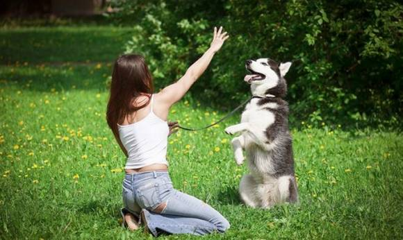
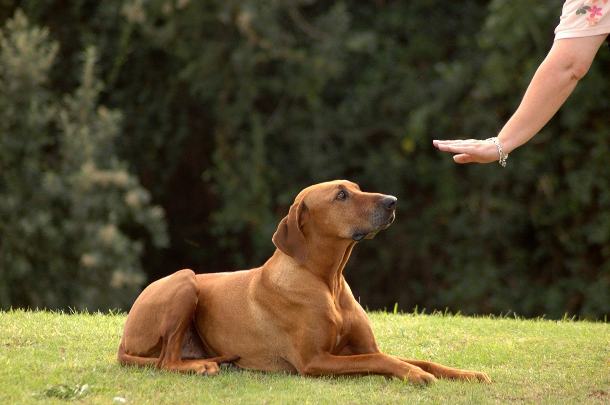
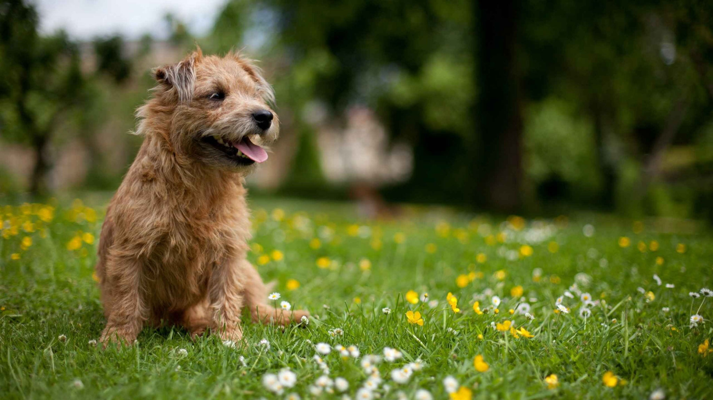

ПОРОДЫ |
УХОД |
КОРМЛЕНИЕ |
ДРЕССИРОВКА |
ЗАБОЛЕВАНИЯ |
О НАС |

Дрессировка собак самостоятельно и без помощи специалиста возможна, если хозяин учит команды для собак точно следуя указанным рекомендациям. От владельца понадобятся ещё трудолюбие и терпение. Эти важные качества, наряду с правильным исполнением каждой команды, позволят дрессировать собаку самому настолько эффективно и быстро, насколько это возможно. Настраивайтесь серьёзно потрудиться, иначе зря потратите время и ничего не добьётесь. Лентяи никогда ничего не добиваются. Итак, как дрессировать собак, с чего начать занятия, что нужно для тренировки собак и щенков самым важным командам, а также какую амуницию брать, какое лакомство давать, где вообще тренировать и сколько? |

Для начала поговорим о том, каким командам следует учить собаку. Если у вас щенок младше 3 месяцев, то почитайте с чего начинается дрессировка щенков. Всем, у кого зверь старше 3х месяцев продолжают чтение данной статьи. Все команды ниже являются очень нужными, поэтому выбросить какую-либо из них не представляется возможным. Если вы не будете читать статьи о командах, написанных ниже, то всё написанное в статье покажется вам слишком непонятным.
Это были все самые нужные команды. К слову, обучить им можно любую собаку любого возраста. Чтобы узнать подробнее как дрессировать собак - обязательно переходите по ссылкам. Я не стремился расписать тут каждую команду, иначе статья была похожа на полотно текста. Кстати, чтобы собака охотнее выполняла команды используйте разные лакомства для собак. С лакомством процесс обучения идёт куда быстрее. Теперь о том, как проводить занятия и сколько. |

Дрессировкой можно заниматься хоть дома, подавая такие простые команды как «ко мне», «сидеть», «фу» и т.д. Но полноценной дрессировкой это назвать нельзя, так как собака будет слушаться хозяев дома, и будет отказываться от послушания на улице. Поэтому берите ошейник, пристёгивайте к нему поводок, запаситесь лакомством и хорошим настроением, и вперёд дрессировать самому. Свои первые занятия проводите в месте, где вам никто не станет мешать – усложнять обстановку и дрессировать в присутствии множества раздражителей будете позже (постепенно). Учите собаку командам три раза в неделю, например: понедельник, среда, пятница. Если слишком заняты, то как минимум два раза. Первые занятие не делайте дольше 35 - 45 минут, а в дальнейшем увеличьте продолжительность тренировок до 1 – 1,5 часов.
|